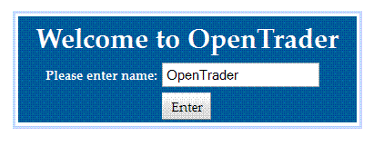
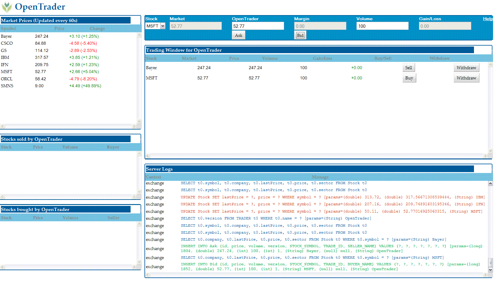

|
|
|
|
|
h1. OpenTrader: a transactional, web application with Google Web Toolkit, OpenJPA/Slice on Tomcat  OpenTrader is a sample web application to demonstrate integration of Google Web Toolkit (GWT) and OpenJPA running in Tomcat Servlet Container. These pages describe various aspects of this end-to-end application. The following sections are fairly independent of each other and can be followed as such based on your interest.
GWT takes a position that is a significantly unique among the multitude of frameworks available to build a browser based client. GWT framework is based on several key concepts:
OpenTrader - the sample example described in these pages - demonstrates how to develop a GWT client for a transactional, server application based on Java Persistence API (JPA). This example is somewhat more involved than a typical AddressBook example in terms of the complexity of the domain model, the transactional functions of the server as well as the interaction between multiple widgets in the client. Also the sample application covers a realistic use case where the core server application is defined independent of both GWT and JPA -- and then demonstrates how these two technologies are used to implement an end-to-end service running inside a Tomcat Servlet Container. Follow the steps to view OpenTrader source code, build the application, deploy it in your favorite application container and run it in your favorite browser. 1. Get the source code¶OpenTrader source code is available as one of the OpenJPA examples. Checkout the source files in a directory. $ svn checkout https://svn.apache.org/repos/asf/openjpa/trunk/openjpa-examples/opentrader The source tree comes with
2. Build¶To build OpenTrader you will require following other libraries.
2.1 Configure build environment¶Edit build.properties to point to the dependent libraries you have downloaded. The file contains the instructions as comments. 2.2 Compile with Ant¶Compile the application. Compilation involves three separate compilation process. First the plain old javac compilation. Followed by GWT cross-compiler that translates Java code into JavaScript. And finally OpenJPA compilation that adds few bytecodes to the persistent classes to manage their persistent behavior (which is also known as bytecode enhancement). GWT Compiler takes ages. Even though it only compiles for a single browser (FireFox). This is controlled by the following directives in the module descriptor OpenTrader.gwt.xml 3. Run¶You can run either in hosted mode - an environment provided by GWT to run within a Jetty container - or in a proper servlet container such as Tomcat, Geronimo or GlassFish or even heavy-duty ones such as WebSphere or Weblogic. In either case, you have to configure the persistence.xml found under src/main/resources/META-INF. This descriptor specifies the database used by OpenTrader. Also edit the jdbc.driver in build.properties for the driver/database you have selected. Now, for hosted mode, simply fire Ant as This should again take a very long time and pop open a horrible looking Swing console titled GWT Development Mode. Go to Development Mode tab and click Launch Default Browser. On my FireFox browser, that opens up the page http://127.0.0.1:8888/OpenTrader.html?gwt.codesvr=127.0.0.1:9997. If all goes well, at this point your browser will prompt you with a welcome dialog box Once you have entered OpenTrader, the browser application looks like  In this page, you can place a trade offer to sell or buy some stocks. To really commit a trade you will need a matching offer. Now as a trader offer can only match to another trader's offer, you need to open another browser page with a different name. In FireFox, the tab will show the Trader name. Now if one Trader makes an offer that match another Trader's offer, then clicking the Sell or Buy button will commit the trade and will appear on the Trading History Window. Also notice the Server Log window. That will display SQL issued for every action by the server. You will also notice SQL being logged even if you are not pressing any buttons. Thatis because the Market Data Panel (the one in th etop-left corner) is refreshing the market prices for the Stocks by a periodic call to the server. As the stock prices change, that change is reflected on the gain/loss column of the waiting trade offers. All this dynamic partial update occurs in the same browser page -- that is what GWT offers. |